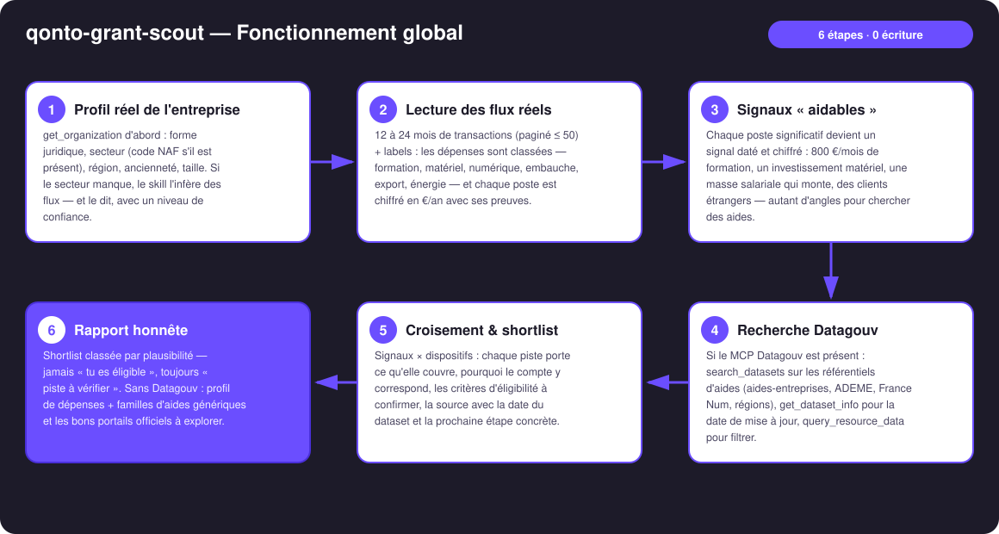
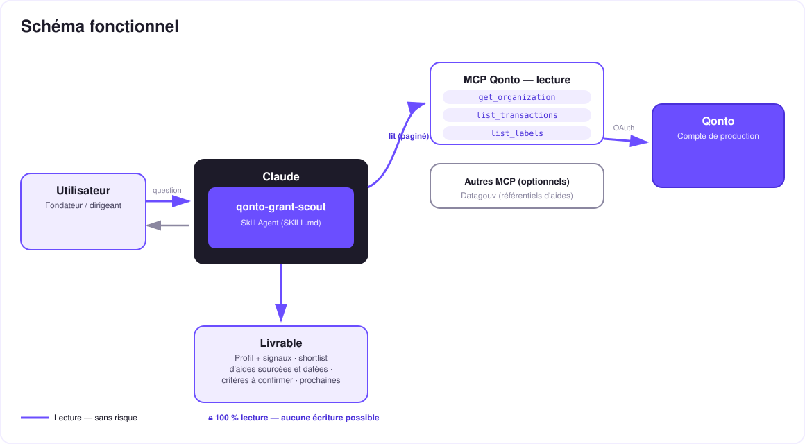

Ton compte sait ce que tu investis — les bases publiques savent qui est aidé pour ça. Le skill fait les présentations.
La France compte des centaines de dispositifs d'aides aux entreprises — et la plupart des TPE n'en touchent aucun, faute de temps pour chercher. Or le compte raconte déjà ce que l'entreprise investit. Le skill fait les présentations :
Secteur (NAF si présent, sinon inféré des flux), région, taille, ancienneté — tout vient du compte, zéro formulaire.
12-24 mois de flux classés : formation, matériel, numérique, embauche, export, énergie — chaque poste chiffré en €/an.
Recherche dans les référentiels d'aides publics — la date de mise à jour de chaque dataset est vérifiée et affichée.
Chaque piste : critères à confirmer, source datée, prochaine étape concrète. Jamais « tu es éligible » — toujours « à vérifier ».
| Prérequis | Détail | Obligatoire |
|---|---|---|
| Compte Qonto production | Le skill s'adapte à toute organisation — get_organization d'abord, zéro donnée en dur | ✅ |
| Pays | Croisement dispositifs : France uniquement (aides nationales/régionales). Autres pays Qonto : profil de dépenses seul, familles génériques, jamais de dispositif inventé | ℹ️ détecté |
| MCP Qonto connecté | Connecteur officiel (claude.ai / Claude Desktop), login OAuth | ✅ |
| MCP Datagouv | Ouvre la recherche dans les référentiels d'aides. Absent : le skill le dit et livre profil + familles d'aides + portails officiels | ⭕ recommandé |
| Historique ≥ 12 mois | En dessous, signaux fragiles — annoncé (tags 🟡) | ⭕ |
| Labels Qonto tenus | Améliorent le classement des dépenses (list_labels) ; sinon classement par contreparties | ⭕ |

get_dataset_info vérifie la fraîcheur, un dataset > ~18 mois dégrade le tag de la pisteget_organization : inféré des contreparties, confiance abaissée, corrigeable par l'utilisateurlist_cash_flow_categories renvoie 403 sur le connecteur claude.ai → repli sur list_labels · cartes rapprochées par emitted_at · pagination ≤ 50 partout
Zéro écriture, et les données bancaires restent chez Qonto : le skill ne crée ni virement, ni facture, ni dossier. Seuls des mots-clés génériques (secteur, région, famille d'aide) partent vers Datagouv — jamais un montant, un nom de contrepartie ou un IBAN.
| Dépense vue dans les flux | Famille d'aides | Exemples (à vérifier à la source) | Prochaine étape type |
|---|---|---|---|
| Formation (organismes, e-learning, certifs) | Financement de la formation | Prise en charge OPCO, FNE-Formation | Demander à son OPCO la prise en charge |
| Matériel / équipement | Aides régionales à l'investissement | Dispositifs des conseils régionaux | Vérifier le guichet éco de sa région |
| Numérique (logiciels, SaaS, site) | Transformation numérique | France Num, chèques numériques régionaux | Passer par un activateur France Num |
| Dépenses R&D-like (prototypage, sous-traitance technique) | Fiscalité incitative | CIR / CII, statut JEI | À instruire avec l'expert-comptable |
| Embauche / alternance | Aides à l'embauche | Aides à l'alternance, dispositifs France Travail | Simuler sur les portails officiels |
| Énergie / véhicules / travaux | Transition écologique | ADEME (Tremplin PME), CEE | Déposer sur le portail ADEME |
| Export / clients étrangers | International | Bpifrance Assurance Prospection, Team France Export | Contacter le conseiller export régional |
| Sortie | Format | Quand |
|---|---|---|
| Réponse dans la conversation | Tableaux markdown : profil + signaux, shortlist sourcée et datée, limites | Toujours — c'est la base |
| Grant radar | Fichier/artifact HTML : signaux × familles d'aides, pistes aux intersections, tags 🟢🟡🔵 | Si l'hôte affiche les fichiers (artifacts claude.ai, Claude Desktop, Claude Code) ; repli automatique sur les tableaux sinon |
| Fiche par piste | Bloc texte prêt à envoyer (OPCO, comptable, guichet région) : signal, dispositif, critères, source | Sur demande, pour chaque piste retenue |
La démo ≤ 3 min jointe à la PR suit le storyboard : le problème (des aides que personne ne va chercher) → le profil qui sort tout seul des flux → la recherche Datagouv sourcée et datée → le croisement (9 600 €/an de formation détectés → le dispositif exact, le lien, quoi demander à l'OPCO) → l'honnêteté par design. Tournée en live sur un compte de production réel.
| Idée | Effort | Note |
|---|---|---|
| Veille trimestrielle : re-croiser et n'alerter que sur les nouvelles pistes | Faible | Réutilise le profil déjà construit |
| Enrichissement Aides-territoires (API dédiée) | Moyen | Source souvent plus fraîche — même discipline de datation |
| Courriel type pré-rempli vers l'OPCO/le guichet avec les chiffres du compte | Faible | Toujours zéro écriture — c'est l'utilisateur qui envoie |
| Modules pays (DE : KfW · ES : ENISA · IT : Invitalia…) | Élevé | Qonto est paneuropéen ; v1 = France + détection du pays |